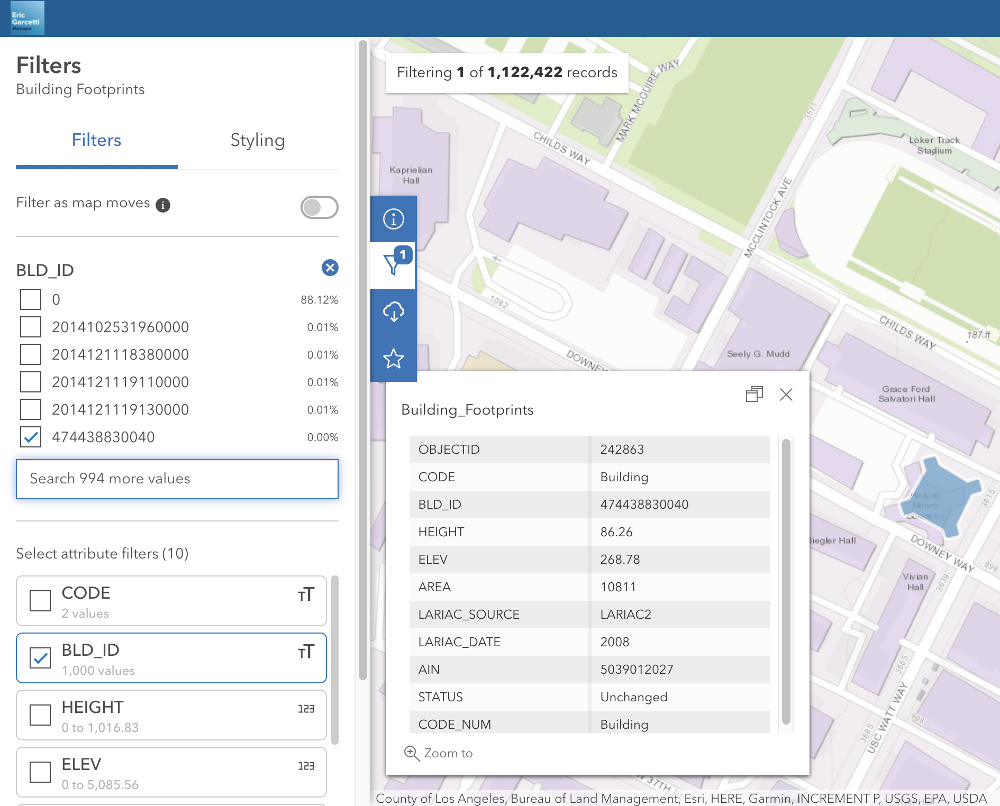
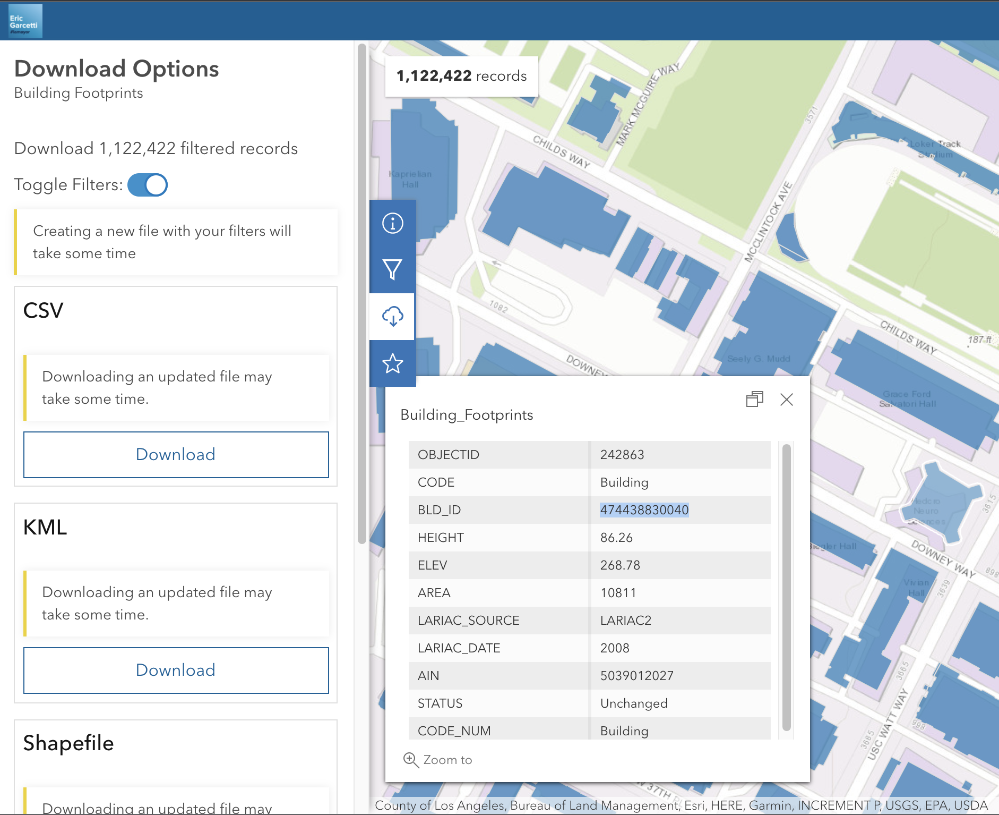

map.on('load', function () {
map.addSource('footprints_source', {
type: 'geojson',
data: 'Building_Footprints.geojson'
});
map.addLayer({
'id': 'footprints',
'type': 'fill',
'source': 'footprints_source',
'layout': {},
'paint': {
'fill-color': '#eeeeee',
'fill-opacity': 0.8
}
});
});